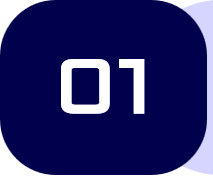
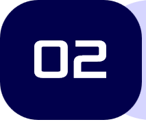

프로토콜 입력 → AI 변환 · 교차 검증 → 장비 실행

프로토콜 입력 및 변환웰 배치 지정 → 프로토콜 PDF 업로드 → 장비 명령 생성
자연어 프로토콜이 구조화된 단계로 정리되고, 장비가 실행할 명령 시퀀스로 변환됩니다.

BioForge-1 장비 실행플레이트 이송 → 분주(4채널·1채널) → 흡광도(OD) 측정4–8×
생성된 명령으로 KIMM BioForge-1이 Bradford assay 전 과정을 수행합니다.